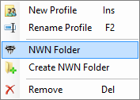
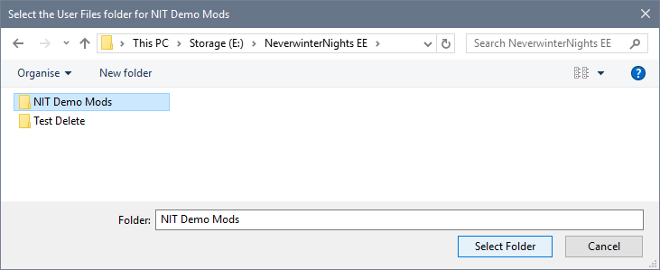

Each profile operates with a specific Neverwinter Nights Installation or Enhanced Edition User Files folder. This feature allows you to use development or test installations that do not interfere with you live gaming environment.

Use the Profiles page in Advanced Settings to specify an existing Neverwinter Nights folder for your Profile.

You must use the default User Files folder for Steam's Enhanced Edition (\Documents\Neverwinter Nights). However, please ensure that NIT's User File location matches Steam's when you specify a different location for User Files in Steam's Neverwinter Nights Launch Options using "‑userdirectory User_Files_Folder_Path".
You can enable "Use NIT to manage Steam's Workshop Content" as an alternative to the Launch Options (See Manage Steam Workshop Subscriptions for more information).
 Edit Icon and click NWN Folder.
Edit Icon and click NWN Folder.

Create a Neverwinter Nights folder
Specify a Neverwinter Nights folder